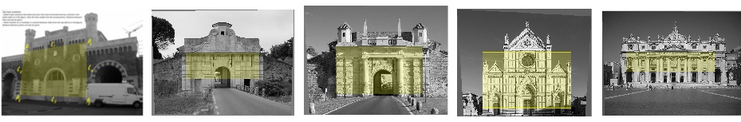

A. Fusiello

The word rectification alone is used in the fields of Computer Vision, Photogrammetry and Image processing with several different meanings. For this reason I shall precede it with an adjective in order to disambiguate. This page is about perspective rectification, i.e., the removal of perspective effects on a single image, a.k.a. perspective control, or correction. The page for epipolar rectification that operates on a stereo pair and makes it amenable to stereo matching is here .
Perspective rectification transforms the original image with a homography such that the image of a reference plane chosen by the user becomes a similarity transform of the real one (instead of a perspective projection). As a result:
The reference plane typically is the ground or a facade. As emphasized above, the similarity is valid only for the reference plane. The image of all the other object points (excluding other planes parallel to the reference one) is distorted. This rectified (or controlled) photo is not the same as an orthophoto(*). The user can provide input in two ways:
In any case horizontal and vertical scales are guessed, so that a default is submitted to the user that does not have access to any measure. An independent scaling of the two axes can be easily applied also a-posteriori.
The MATLAB Perspective Rectification Toolkit is based on functions contained in the MATLAB Computer Vision Toolkit by A. Fusiello. The code does not have any other external dependency on toolboxes or packages, and runs indifferently on Octave and Matlab. It has been tested on Octave 4.2.1 and Matlab R2017a.
(*) An orthophoto is a synthetic (rendered) orthographic image, and its creation entails the knowledge of the structure of the imaged object (i.e., the depth of all the points).